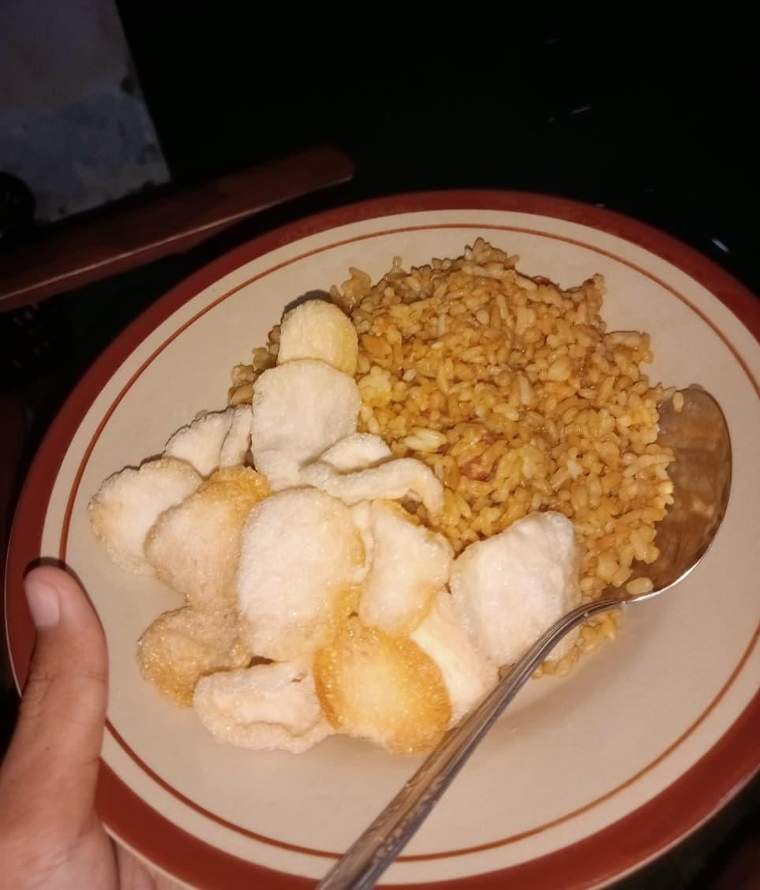

|
ALBUM FOTO HOBI
Kumpulan Foto Kegiatan dan Hobi Pribadi |

|
|
|
| |
|
| |
|
| |
|
| |
|
Galeri Foto Hobi Utama
Pilih kategori hobi di bawah ini untuk melihat album lengkapnya.
(Petunjuk: Klik gambar atau judul untuk melihat galeri hobi)
1. Hobi Memasak Mencoba berbagai resep masakan dan kue lezat seperti brownies, mini pancake, dan sate. [ Lihat Album Memasak ] |
2. Hobi Mendengarkan Musik
Menikmati alunan musik dari berbagai genre untuk merilekskan pikiran dan mencari inspirasi. [ Lihat Album Musik ] |
3. Hobi Berkebun
Menanam bunga matahari, tomat, serta merawat tanaman hijau di halaman rumah. [ Lihat Album Berkebun ] |
Cerita Foto Hobi
Foto-foto ini merupakan bagian dari dokumentasi hobi saya. Setiap hobi memberikan warna dan keseimbangan dalam kegiatan sehari-hari saya.
| My Social Media |
|
© 2026 Fauzi Nur Huda - X SIJA 1 SMK Negeri 2 Yogyakarta